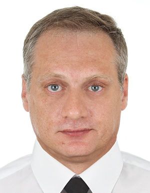
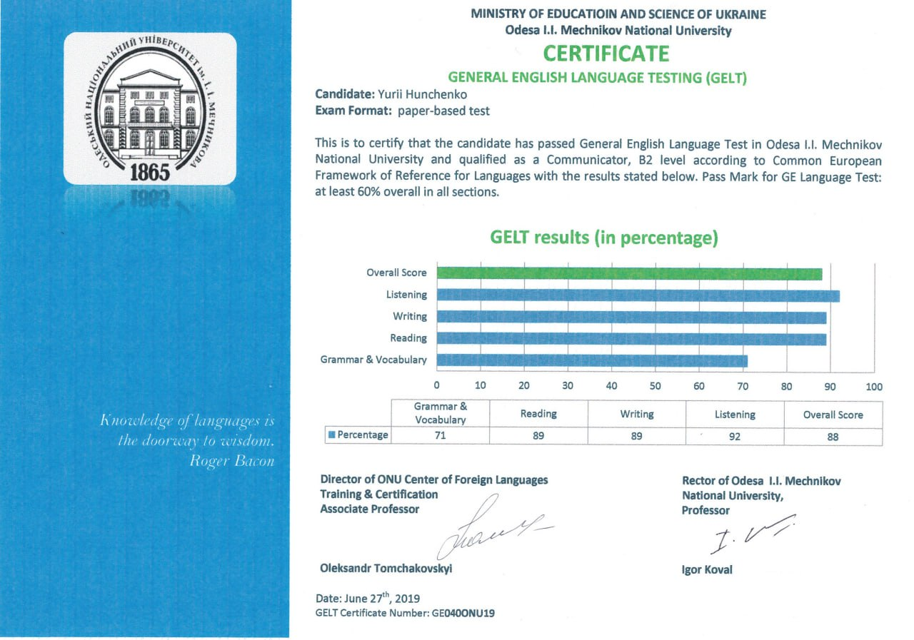
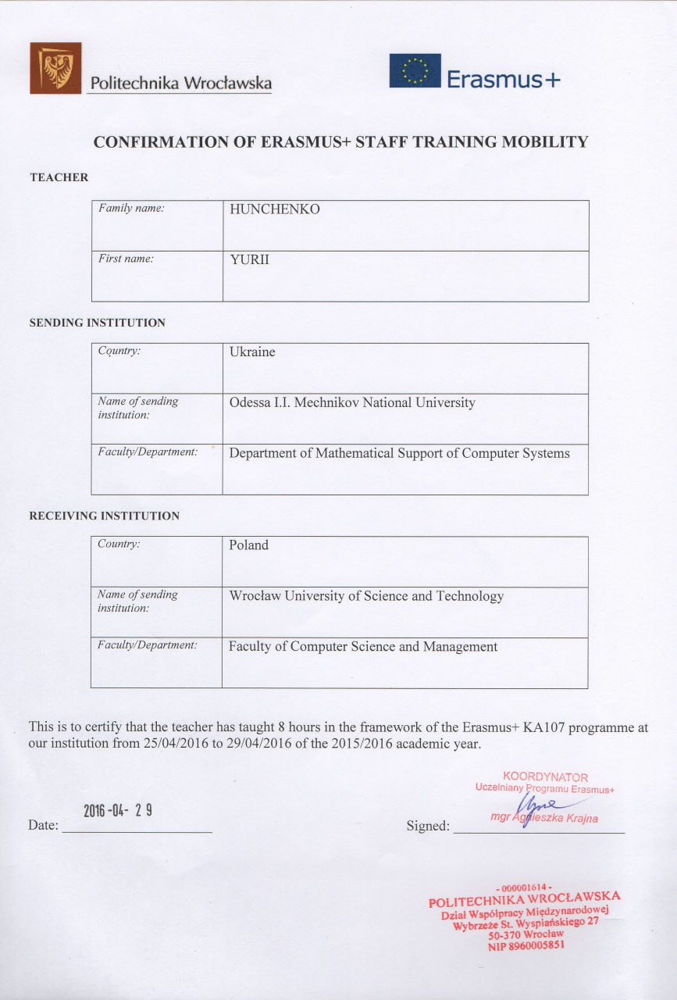
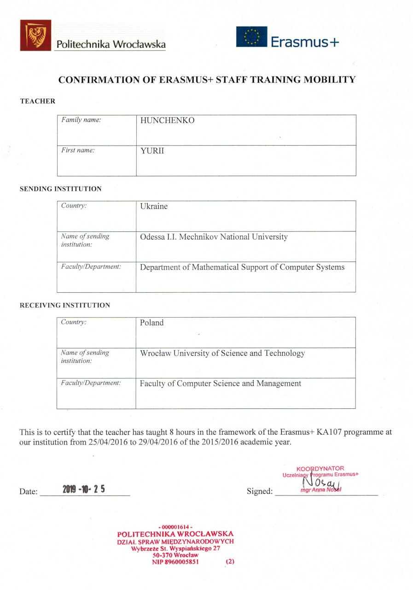
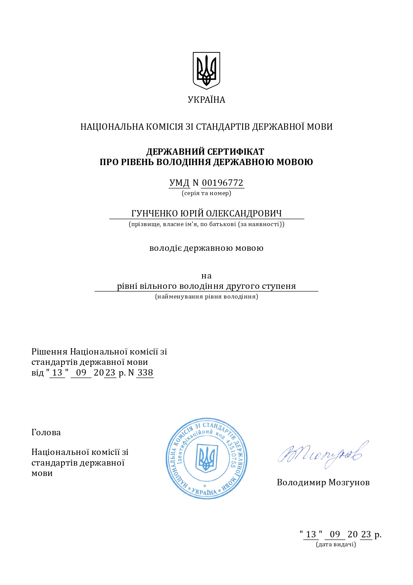
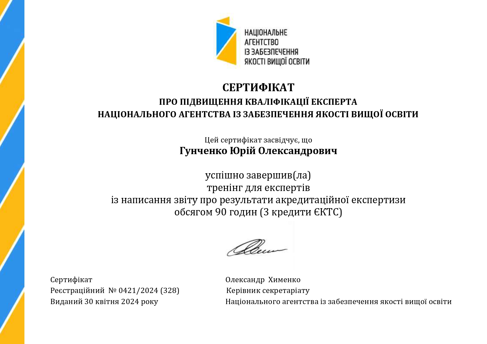

Завідувач кафедри: Гунченко Юрій Олександрович
доктор технічних наук, професор
Основні публікації:
Індексовані в Scopus чи Web of Science:
- Igor Petrov, Vladislav Mykhailenko, Roman Kharchenko, Yurii Gunchenko, Aleksandr Kochetkov and Oksana Zui “Intelligent analysis of the causes of the Challenger space shuttle disaster” // Proceedings of the 12th International Conference Information Control Systems & Technologies (ICST 2024) Odesa, Ukraine, September 23–25, 2024. CEUR Workshop Proceedings. – 2024. – Vol.3790. – CEUR-WS.org – P. 295-305. ISSN 1613-0073 (Scopus) https://ceur-ws.org/Vol-3790/paper26.pdf
- Pasichnyk Natalia, Shvorov Sergey, Gunchenko Yurii, Miroshkin Oleksandr, Zakharchenko Elina, Opryshko Oleksiy. Prospects for satellite spectral monitoring for automation of processes for assessing agricultural soil use / CEUR Workshop Proceedings, 2020. Vol. 3126. P. 313 - 320.
- Borovyk Oleh, Gunchenko Yurii, Lienkov Serhii, Borovyk Liudmyla, Konovalenko Oleksii and Basaraba Iryna. Actual aspects of information technologies application at the problem decision of the movement organisation by a convoy of vehicles / CEUR Workshop Proceedings, 2020. Vol. 2683. P. 1 – 8.
- Martynovych Larysa, Gunchenko Yurii, Shugailo Yurii, Bercov Yurii, Slutskyi Dmytro, Kostiantyn Smirnov. Design of ternary decoder / CEUR Workshop Proceedings, 2020. Vol. 2683. P. 285 – 290.
- Pasichnyk Natalia, Komarchuk Dmytro, Opryshko Oleksiy, Gunchenko Yurii, Shvorov Sergey, Zui Oksana. Validation of data obtained after field sensing using UAV for management of future crops / CEUR Workshop Proceedings, 2020. Vol. 2683. P. 328 – 334.
- Yurii Gunchenko, Sergey Shvorov, Volodymyr Lukin, Vitalii Mezhuyev. Intellectual Control System For Unmanned Energy Crop Combine / CEUR Workshop Proceedings, 2020. Vol. 2683. P. 21 – 24.
- Mezhuyev V., Gunchenko Y., Shvorov S., Chyrchenko D. A method for planning the routes of harvesting equipment using unmanned aerial vehicles / Intelligent Automation and Soft Computing, 2020.
- Kuznichenko S., Buchynska I., Kovalenko L., Gunchenko Y. Suitable site selection using two-stage GIS-based fuzzy multi-criteria decision analysis / Advances in Intelligent Systems and Computing. 2020.
- Mezhuev V., Lytvyn O., Pershyna I., Kovalska O., Gunchenko Y. Acceptance of the Methods of Decision-making: A Case Study from Software Development Companies in Ukraine and Malaysia / Proceedings of the 2019 8th International Conference on Software and Computer Applications. (Penang, Malaysia, February 19 – 21). Malaysia, 2019. P. 199-204.
У наукових виданнях, включених до переліку наукових фахових видань України:
- Михайленко В.С., Гунченко Ю.О., Лещенко В.В., Зуй О.М. Методика синтезу нечіткої адаптивної системи управління складним об'єктом. // Збірник наукових праць Військового інституту Київського національного університету імені Тараса Шевченка. – К. 2024. – № 84. С. 54-66.
- Михайленко В.С., Гвоздева І.М., Гунченко Ю.О., Коренкова Г.В., Шевченко Т.І. Інтелектуальна система аналізу розташування мін // Збірник наукових праць Військового інституту Київського національного університету імені Тараса Шевченка. – К. 2024. – № 82. – С. 48 – 58.
- Гунченко Ю.О., Камєнєв К.І., Камєнєва А.В., Зуй О.М. Інформаційна система для завантаження контейнерного судна з урахуванням структурних та операційних обмежень // Збірник наукових праць Військового інституту Київського національного університету імені Тараса Шевченка. – К. 2023. – № 78. – С. 47 – 54.
- Gunchenko Yurii, Shugailo Yurii, Bercov Yurii, Martynovych Larysa. Analysis of the current state of the elements of ternary logic. Зб. наук. пр. Військового інституту Київського національного університету імені Тараса Шевченка. Київ, 2022. № 76. С. 88 – 101.
- Мартинович, Л., Гунченко, Ю., Шугайло, Ю., Берков, Ю. Проектування та синтез трійкових логічних елементів. / Computer Systems and Information Technologies, 2022. № 4, P. 52–60. https://doi.org/10.31891/csit-2022-4-8
- Гунченко Ю.О., Лєнков С.В., Толок І.В., Степаненко Є.О. Основні принципи синтезу навчально-інформаційних систем для організації безперервної освіти. Зб. наук. пр. Військового інституту Київського національного університету імені Тараса Шевченка. Київ, 2021. № 73. С. 66 – 78.
- Gunchenko Yurii, Lienkov Serhii, Husak Yurii, Shvorov Sergey, Zaitsev Dmytro. Model of Functioning Data-Transfer Systems Special Purposes Taking into Account the Influence of Cyber Attack / International Journal of Innovative Technology and Exploring Engineering(TM), 2020. Volume-9, Issue-6. – Р. 2248 – 2252.
Тези доповідей:
- Терзі Д.Д., Гунченко Ю.О. Огляд систем взаємодії та автоматизації голографічних систем відображення // 21 Всеукраїнська конференція студентів і молодих науковців «Інформатика, інформаційні системи та технології». – Одеса, 2024. – С. 160 – 162.
- Сухіна О.О., Гунченко Ю.О. Нечітка система управління клімат – контролем у фітнес – центру // 21 Всеукраїнська конференція студентів і молодих науковців «Інформатика, інформаційні системи та технології». – Одеса, 2024. – С. 149 – 150.
- Нікітченко В.В., Гунченко Ю.О. Особливості формування наборів даних для ml-моделей при автоматизації обслуговування програмних систем // 21 Всеукраїнська конференція студентів і молодих науковців «Інформатика, інформаційні системи та технології». – Одеса, 2024. – С. 93 – 95.
- Ісаєв О.М., Гунченко Ю.О. Огляд систем комп’ютерної діагностики автомобіля // 21 Всеукраїнська конференція студентів і молодих науковців «Інформатика, інформаційні системи та технології». – Одеса, 2024. – С. 23 – 25.
- Пайзулаєв І., Гунченко Ю.О. Нечітка система управління параметрами теплового пункту багатоповерхового будинку // 21 Всеукраїнська конференція студентів і молодих науковців «Інформатика, інформаційні системи та технології». – Одеса, 2024. – С. 147 – 148.
- Borovyk Oleh, Gunchenko Yurii, Lienkov Serhii, Borovyk Liudmyla, Konovalenko Oleksii and Basaraba Iryna. Actual aspects of information technologies application at the problem decision of the movement organisation by a convoy of vehicles. International Scientific and Practical Conference «Intellectual Systems and Information Technologies». Odesa, 2021. P. 8 - 15.
- Martynovych Larysa, Gunchenko Yurii, Shugailo Yurii, Bercov Yurii, Slutskyi Dmytro, Smirnov Kostiantyn. Design of ternary decoder. International Scientific and Practical Conference «Intellectual Systems and Information Technologies». Odesa, 2021. – P. 304 – 309.
- Pasichnyk Natalia, Shvorov Sergey, Gunchenko Yurii, Oleksandr Miroshkin, Zakharchenko Elina, Opryshko Oleksiy. Prospects for satellite spectral monitoring for automation of processes for assessing agricultural soil use. International Scientific and Practical Conference «Intellectual Systems and Information Technologies». Odesa, 2021. – P. 332 – 339.
- Pasichnyk Natalia, Komarchuk Dmytro, Opryshko Oleksiy, Gunchenko Yurii, Shvorov Sergey, Zui Oksana. Validation of data obtained after field sensing using UAV for management of future crops. International Scientific and Practical Conference «Intellectual Systems and Information Technologies». Odesa, 2021. – P. 347 – 353.
- Солодовнікова К., Гунченко Ю. Програма для обліку руху товарів в організації з різнофункціональними філіалами. Тези доповідей V Всеукраїнській науково-практичній конференції «Перспективні напрямки сучасної електроніки, інформаційних і комп'ютерних систем MEICS-2020». Дніпро, 2020. С. 26 – 27.
- Білодід О., Гунченко Ю.. Огляд бібліотеки Keras для роботи з мережами глибинного навчання. Тези доповідей V Всеукраїнській науково-практичній конференції «Перспективні напрямки сучасної електроніки, інформаційних і комп'ютерних систем MEICS-2020». Дніпро, 2020. С. 55 – 56.
- Гунченко Ю., Мартинович Л., Тихонова К., Слуцький Д.. Концепція побудови пристроїв для трійкової логіки. Тези доповідей V Всеукраїнській науково-практичній конференції «Перспективні напрямки сучасної електроніки, інформаційних і комп'ютерних систем MEICS-2020». Дніпро, 2020. С. 93 – 94.
- Романенко Е.Е., Гунченко Ю.А. Обзор средств реализации биометрических методов аутентификации в ОС IOS и ANDROID. 17 Всеукраїнська конференція студентів і молодих науковців «Інформатика, інформаційні системи та технології». Одеса, 2020. С. 48 – 51.
- Романенко Е. Е., Дубовой В. А., Гунченко Ю. А. Сравнение современных методов биометрической аутентификации человека. 17 Всеукраїнська конференція студентів і молодих науковців «Інформатика, інформаційні системи та технології». Одеса, 2020. С. 170 – 172.
- Сакун Ю.А., Гунченко Ю.А. Разработка системы управления для механического манипулятора на микроконтроллере Arduino. 16 Всеукраїнська конференція студентів і молодих науковців «Інформатика, інформаційні системи та технології». Одеса, 2019. С. 102 – 103.
- Миненко В.В., Петлюк Д.В., Гунченко Ю.А. Разработка кроссплатформеного WEB-приложения для анонимного обмена подарками. 16 Всеукраїнська конференція студентів і молодих науковців «Інформатика, інформаційні системи та технології». Одеса, 2019. С. 112 – 114.
- Петлюк Д.В., Миненко В.В., Гунченко Ю.А. Разработка кроссплатформенного WEB-приложения для поиска и организации совместных путешествий. 16 Всеукраїнська конференція студентів і молодих науковців «Інформатика, інформаційні системи та технології». Одеса, 2019. С. 114 – 115.
- Гунченко Ю., Шворов С., Давиденко Т.. Система Керування Температурним Режимом Зброджування Енергетичних Культур у Бататомодульних Біогазових Комплексах. Матеріли 8-ї Міжнародної науково-технічної конференції «Інформаційні системи та технології» ICT-2019. Коблево-Харків, 2019. С. 109 – 112.
- Казачков В., Маслєєв О., Гунченко Ю. Використання Нейронних Мереж у Системах Розпізнання Мови. Матеріли 8-ї Міжнародної науково-технічної конференції «Інформаційні системи та технології» ICT-2019. Коблево-Харків, 2019. С. 270 – 272.
Монографії:
- Gunchenko Yurii, Shvorov Sergey, Davidenko Taras, Yukhimenko Anna, Slutskyi Dmytro, Martynovych Larysa. Intelligent biomass collection processes management system for biogas harvests by autonomous unmanned aerial vehicles. Part of the monograph “Intellectual systems and information technologies”. Vienna: Premier Publishing s.r.o. 2021. P. 69 - 99.
- Kuznichenko Svitlana, Gunchenko Yurii, Buchynska Iryna. Vegetation classification using satellite imagery and gis technologies. Part of the Monograph “Przetwarzanie, transmisja i bezpieczeństwo informacji'2020”. Wydawnictwo Naukowe Akademii Techniczno-Humanistycznej w Bielsku-Białej. Poland, 2020. – P. 145 – 158.
Навчально-методичні посібники
- Методичні вказівки з виконання та оформлення кваліфікаційних робіт здобувачами першого (бакалаврського) рівня та другого (магістерського) рівня вищої освіти галузі 12 – Інформаційні технології / уклад.: Є.В.Малахов, Ю.О.Гунченко, Л.А.Волощук, О.І.Розновець, Н.Ф.Трубіна, – Одеса : ОЛДІ+, 2023. – 40 с. Посилання ідентифікатор: https://onu.edu.ua/pub/bank/userfiles/files/imem/Metodychni_vkazivky_kvalif_robit_.pdf
- Архітектура комп'ютерів та низькорівневе програмування: метод. вказівки до виконання курс. проєкту для здобувачів першого (бакалавр.) рівня вищ. освіти спец. 123 Комп’ютерна інженерія / уклад.: Ю. О. Гунченко, І. В. Шаріпова, Ю. М. Берков. – Одеса : Олді+, 2024. – 40 с. Посилання-ідентифікатор: https://dspace.onu.edu.ua/items/be78a1a4-cb28-4016-85b4-3863bd6920fa
Патент на винахід або корисну модель:
- Спосіб кодування-декодування даних з шифруванням підвищеної криптостійкості: пат. 147385 Україна МПК (2006) G09C 1/00, G06F 13/00. Коваль В.В., Гунченко Ю.О., Левченко А.О., Шворов С.А., Опришко О.О., Пасічник Н.А., Лендєл Т.І., Шугайло Ю.Б., Романенко К.Є., Шворов А.С., Юхименко А.С. № u202006829, заявл. 23.10.2020, опубл. 05.05.2021, бюл. № 18.
- Трійковий RS-тригер: пат. 149386 Україна МПК (2021.01) Y03K 19/00. Гунченко Ю.О., Глауберман М.А., Мартинович Л.Я., Романенко К.Є., Межуєв В.І., Маслій Н.Д., Шугайло Ю.Б., Берков Ю.М., Фастиковський П.П. № u 202104077, заявл. 13.07.2021, опубл. 10.11.2021, бюл. № 45
- Трійковий повний однорозрядний суматор : пат. 139770 Україна МПК (2006) Н03К 19/00. Гунченко Ю.О., Лєнков С.В., Шворов С.А., Межуєв В.І., Левченко А.О., Кузніченко С.Д., Лєнков Є.С., Ніколаєнко О.Є., Шворов А.С., Берков Ю.М., Романенко К.Є.. № u201905060, заявл. 13.05.2019, опубл. 27.01.2020, Бюл. № 2.
Науковий керівник д/б наукової теми
за програмою МОН України: НДР №306 «Комп’ютерні технології, системи, компоненти: моделювання та програмне забезпечення». (№ держ. реєстрації 0121U110545, з 1 січня 2021 р. по 31 грудня 2024 р., без цільового фінансування)Член редакційної колегії журналів
- "Сенсорна електроніка і мікросистемні технології", http://semst.onu.edu.ua/
- «Збірник наукових праць Військового інституту Київського національного університету імені Тараса Шевченка», https://mil.univ.kiev.ua/page/lib
Підвищення кваліфікації, сертифікати:
- Сертифікат тестування з англійської мови на рівні В2 за загальним спрямуванням GE040ONU19 від 27.06.2019 р.

- Вроцлавський політехнічний університеті (по програмі Erasmus+) з 25.04.2016 р. по 29.04.2016 р. (довідка від 25.10.2019 р.);
 
- Державний сертифікат про володіння державною мовою;

- СЕРТИФІКАТ про підвищення кваліфікації Експерта Національного агентства із забезпечення якості вищої освіти;

- СЕРТИФІКАТ про підвищення кваліфікації Експерта Національного агентства із забезпечення якості вищої освіти;

Дисципліни, що викладає:
- Комп'ютерні системи Робоча програма; Силабус
- Комп'ютерна схемотехніка та програмування контролерів Робоча програма; Силабус
- Проектування інформаційних систем Робоча програма; Силабус
- Аналіз і проектування кіберфізичних систем Робоча програма; Силабус
- Комп’ютерна схемотехніка та архітектура комп’ютерів Робоча програма; Силабус
- Магістерський семінар Робоча програма; Силабус